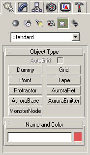

|
Helpers

On the Create tab of the Command Panel is the "Helpers" icon.
(depressed in the image). There are a number of object types listed
including some specific ones for NWmax. These are:
- AuroraBase - is the base for all models and holds core
model information such as animations, supermodels, animation scale,
events
- MonsterNode - This is a specific HotU helper. It supports
the creation of up to 10 monster nodes by just clikcing in the desired
viewport. The dummy objects are named and numbered according to the
bioware name rules
- AuroraRef - The is the standard MDL ref object. It tends to
be used as the target point for p2p emitters
- AuroraEmitter - An emitter. This holds all the emitter
information
Further detailed information on these is being developed. In the mean
time referring to the Bioware documentation on
their Aura scripts will help, particularly with reference emitters.
|
|